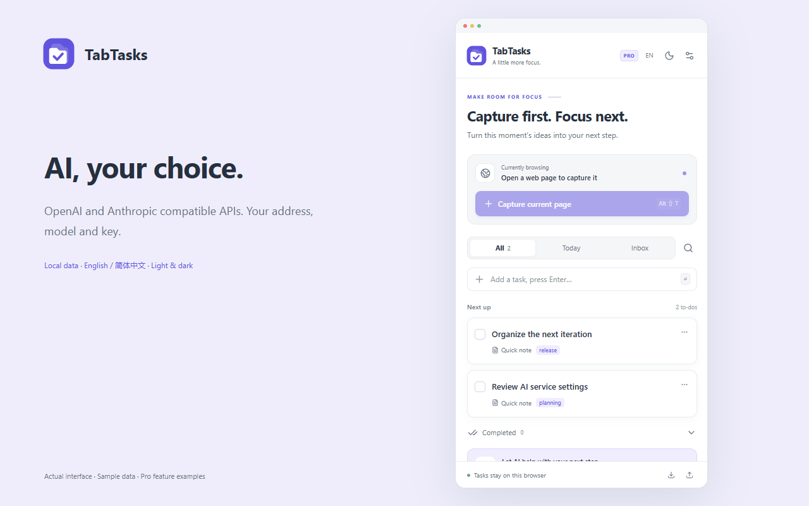

Capture the moment
Save a webpage or selected text as a task, without leaving your browser.
From ideas in your browser to clear next steps. Capture a page, add context, and keep your next task close.
Chrome 116+ · Local storage · No account required

Save a webpage or selected text as a task, without leaving your browser.
Notes, due dates and subtasks make a small idea ready to act on.
Connect OpenAI, Anthropic or a compatible service. Customize the model and address. Review changes before applying. AI usage is billed separately.
English by default. 简体中文 when you want it.
Light, dark, or follow your system.
Tasks and preferences stay local. An explicit AI request sends your instruction and disclosed task snapshot directly to your selected service. No developer analytics.
Privacy policy